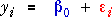

Sequence of models
Three models are particularly important in the analysis of experiments involving mixtures:



Each model is more flexible than the previous one (more degrees of freedom) so it has a lower residual sum of squares when fitted by least squares.
Sums of squares and anova table
The decreases in the residual sums of squares (explained by adding terms to the mean-only model) are the basis of an analysis of variance table.
| Source of variation | SSq | df | MSq | F | p-value |
|---|---|---|---|---|---|
| Adding linear terms | ? | 2 | ? | ? | ? |
| Adding quadratic terms | ? | 3 | ? | ? | ? |
| Residual | ? | n - 6 | ? | ||
| Total | ? | n - 1 | |||
The p-values on the right test whether there is any evidence that the corresponding added terms are needed.
Elongation of yarn
The analysis of variance table below tests the significance of the quadratic terms for the yarn elongation data.
| Source of variation | SSq | df | MSq | F | p-value |
|---|---|---|---|---|---|
| Linear Terms | 57.629 | 2 | 28.815 | 39.53 | <0.001 |
| Quadratic terms | 70.667 | 3 | 23.556 | 32.32 | <0.001 |
| Residual | 6.560 | 9 | 0.729 | ||
| Total | 134.856 | 14 | |||
Since the p-value for the quadratic terms is so highly significant, we conclude that there is curvature in the response surface. (Since we have concluded that there is curvature, there is no point in trying to interpret the p-value for the linear terms.)
Testing for lack of fit of the quadratic model
If there are more design points (distinct combinations of factor levels) than parameters in the model, and there are replicate runs at some of the design points, then it is possible to further refine the analysis of variance table to test for lack of fit of the quadratic model.
If there are d design points, the pure error sum of squares measures variability within each of the d sets of replicate observations (the sum of squares about the means for all design points). The lack of fit sum of squares describes distance between the observed mean response at all design points and the corresponding fitted values from a quadratic model.
| Source of variation | SSq | df | MSq | F | p-value |
|---|---|---|---|---|---|
| Adding linear terms | ? | 2 | ? | ? | ? |
| Adding quadratic terms | ? | 3 | ? | ? | ? |
| Lack of fit | ? | d - 6 | ? | ? | ? |
| Residual (pure error) | ? | n - d - 6 | ? | ||
| Total | ? | n - 1 | |||
As usual, the p-values are interpreted from the bottom of the anova table upwards. If the lack-of-fit term is highly significant (low p-value), then we would conclude that the curvature of the response surface is more complex than quadratic. (And there would be no point in testing the quadratic or linear terms.)
Conversely, if we conclude that there is no evidence of lack of fit of the quadratic, we would try to interpret the p-value for the quadratic term, etc.
Elongation of yarn
In this data set, there were exactly 6 design points (distinct combinations of factor levels). Since there are also 6 parameters in the quadratic model, the least squares response surface fits exactly through the mean response at each of the design points. A consequence is that there are no degrees of freedom to test for lack of fit of the model for this data set.
A better experimental design would have been a simplex-centroid design which has the same design points as the m=2 simplex-lattice design but adds one extra design point with an equal mixture of all 3 components. This would have left one degree of freedom to test for lack of fit of the quadratic model.